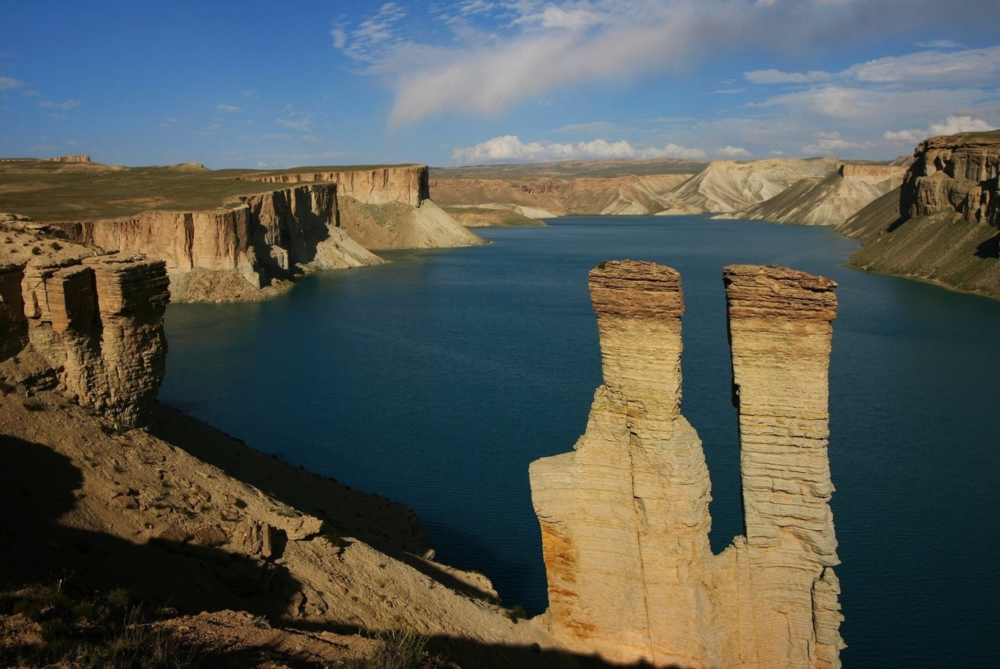

Fill out the form below to select the desired city

Babyan
Bamyan also referred to as the “Shining Light” and “Valley of Gods” is one of the oldest cities in central and South Asia. Inhabited since the third century BC, Bamyan is located in the central highlands, known as the peaceful Hazarajat or Hazaristan, Afghanistan. Bamyan lies at the heart of ancient silk road, once connecting Chinese commerce with Europe and the broader Mediterranean region. It brought languages, believes and tradition together and home to world’s tallest standing Buddha statues, carved into the red rock cliffs on the north side of Bamyan town.